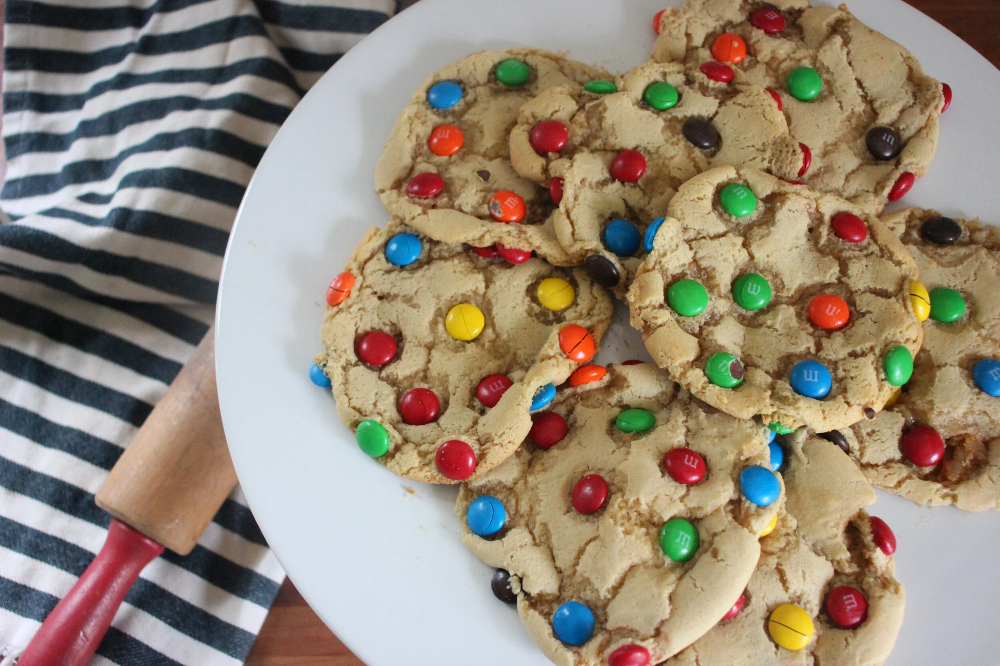

M&M colossal cookies
this recipe is adapted from USA by the mushy mom's fiat https://www.themushymom.com/themushymommy/2020/2/5/m-m-colossal-cookie-recipe

February 5, 2020
Recipes, DIY
Ingredients
- 2 Cups Brown Sugar
- 2 Large Eggs
- One stick of salted butter, softened
- 2.5 cups flour
- Sprinkle of Salt
- 1 heaping teaspoon Baking Soda
- 1.5 teaspoons Vanilla Extract
- M&M’s
Equipment
- Mixer
- Spatula
- Bowl
- Teaspoon
Directions
- Preheat the oven to 350* and toss your brown sugar and one stick of softened butter into the mixer. Mix until creamy, then add in your 1.5 teaspoon of vanilla extract and two eggs. After mixing, you should have a beautiful, creamy base for your cookie.
- Add in 2.5 cups of flour, a sprinkle of salt and your baking soda. Mix until fluffy and until you have a soft dough consistency.
- Pour your M&M’s in a bowl and scoop up large portions of dough into a ball, then rub the face of the cookie around in the M&M’s to have them coat the top. Add in any candies as needed to fill in spaces or have a variety of colors. You want your dough ball to be wide and much larger than a traditional cookie you’d make.
- Place dough ball, candy side up, on a baking stone and bake for 12-14 minutes until cookie is golden. Pull out of oven and leave cookie to cool and harden before using a large spatula to remove cookie.
- Eat the heck out of those things because they are SO good!
"This page created as academic activity only."